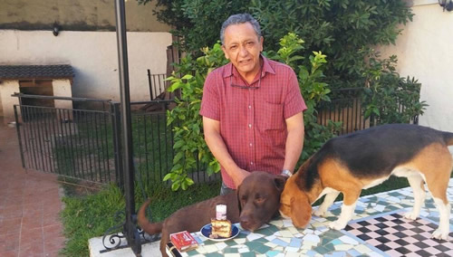

Real Chubut - Agencia de Noticias


Los cuadernos de las coimas - Cristina estaba en la Quinta de Olivos cuando llevaban los bolsos con dólares

El chofer Centeno reveló que la ex presidenta participaba en Olivos de las reuniones que se hacían con las entregas de plata ilegal. Y dijo que la recaudación no paró tras la muerte de Kirchner.
Oscar Centeno, el chofer de Roberto Baratta que destapó con sus cuadernos el escándalo de los bolsos con coimas, involucró de lleno a la ex presidenta Cristina Kirchner en el mecanismo de recaudación de pagos ilegales. Ante la Justicia, aseguró que cuando llevaban los bolsos Cristina estaba en el lugar. Según reconstruyó Clarín -en base a fuentes judiciales y cercanas al ex chofer-, Centeno dejó asentado en el expediente que luego de que Baratta le entregara a Kirchner y su secretario privado Daniel Muñoz bolsos con dinero en la Quinta de Olivos, la ex presidenta se sumaba a esas reuniones "vestida de jogging". "Se la veía a ella (por Cristina) en jogging que cruzaba desde la casa donde vivía hacia el chalet donde habían dejado el dinero", afirmó.
Además, Centeno aseguró que tras la muerte de Kirchner las entregas de dinero no se detuvieron, pero se espaciaron: pasaron de hacerse tres veces a la semana a una sola vez. "Cuando Néstor Kirchner estaba vivo íbamos muy seguido. Algunas veces por trabajo, pero otras para entregar bolsos con plata hasta tres veces por semana. Cuando se muere Kirchner las recaudaciones se empiezan a hacer una vez por semana", explicó el chofer.
Según reconstruyó Clarín, Centeno dijo que hubo más cambios en el esquema de recaudación tras la muerte de Kirchner. Los fondos ilegales dejaron de ser transportados al departamento de la ex presidenta en Uruguay y Juncal donde los recibía Muñoz. Baratta empezó a hacerse cargo de todo y se los llevaba a su departamento en Belgrano. Al día siguiente los llevaba junto a Centeno en bolsos a la Quinta de Olivos, donde vivía la ex presidenta.
No es la única revelación del chofer que pone en el centro de la maniobra a Cristina Kirchner. Según declaró -en base a la información que recolectó Clarín-, antes de ir a Olivos le pedían por teléfono indicaciones al secretario privado de Cristina. "El nos daba la autorización y nos íbamos del ministerio a Olivos. Algunas veces pasábamos antes a retirar dinero. Cuando llegaban le avisaban al de la puerta y nos autorizaban el ingreso". Y luego admite: "Yo la vi a Cristina (en Olivos) muchas veces".
¿Pero quién recibía esa plata? ¿Acaso era la propia ex presidenta o su hijo Máximo Kirchner? Centeno no lo explica, pero lo cierto es que tras la muerte de su padre, Máximo se mudó a la Quinta de Olivos y ofició de sostén político y emocional de su madre. Incluso, según los ex funcionarios K que conocían la intimidad de la familia de la ex presidenta, el hijo era el encargado de llevar adelante las tareas que realizaba su padre. ¿Eso incluía el cobro de pagos ilegales? La Justicia no descarta trabajar en esa hipótesis.
Hay más detalles que revela Centeno en su declaración. Cuenta cómo se potenciaba el esquema de cobro de coimas en épocas de campaña y apunta al ex jefe de Gabinete, Juan Manuel Abal Medina. Según el chofer, los aportes que pedían a las empresas los recolectaba Baratta y hacían las entregas en la Casa Rosada en la Jefatura de Gabinete. El jueves, Abal Medina reconoció en una declaración indagatoria ante la Justicia que hubo aportes de dinero ilegal por parte de empresario para la campaña electoral de 2013.
Centeno se había referido a la recaudación para la campaña cuando retomó la escritura de sus cuadernos en 2013. “No quise anotar más por temor a que me descubran. Pero decidí hacerlo porque en una reunión que tuvo De Vido Baratta y la señora presidenta en la cual los instruyó para que sigan recaudando de las empresas para las próximas campañas”.
Además, revela que la relación entre Cristina y Baratta empezó a dificultarse y que tras varias entregas en Olivos tuvieron un enfrentamiento y se pelearon. Ella llegó a insultarlo. El chofer no da detalles sobre el motivo de los enojos.
Las palabras de Centeno reafirman la hipótesis que sostienen el juez Claudio Bonadio y el fiscal Carlos Stornelli. Ambos aseguran que Néstor y Cristina Kirchner "comandaban" la banda de las coimas que se reveló por los cuadernos de Centeno. Así lo reflejaron en la acusación que les leyeron a los empresarios y funcionarios detenidos en la causa.
Para la Justicia, la asociación ilícita "desarrolló sus actividades aproximadamente entre el 2008 y noviembre de 2015" con la finalidad de "organizar un sistema de recaudación de fondos para recibir dinero ilegal con el fin de enriquecerse ilegalmente y de utilizar parte de esos fondos en la comisión de otros delitos, todo ello aprovechando su posición como funcionarios del Poder Ejecutivo”.
Hasta ahora, hay seis arrepentidos. Además de Centeno se acogieron a esa figura los empresarios Ángelo Calcaterra y Javier Sánchez Caballero (ex Iecsa), Juan Carlos De Goycochea (Isolux), Hector Zabaleta (Techint) y Armando Loson (Albanesi). Este viernes podría sumarse a ese selecto listado como imputado colaborador, Carlos Wagner, el ex presidente de la Cámara de la Construcción durante el kirchnerismo y detenido desde que estalló el escándalo.
Según el entorno de Centeno, en su declaración también apunta contra el ex juez federal Norberto Oyarbide y el empresario Jorge "Corcho" Rodríguez como otro de los encargados de pagarle dinero a Baratta (ver aparte). No es el único caso que puede complicar a Rodríguez. El empresario es investigado por su supuesto rol como valijero en el caso Odebrecht.
Hasta ahora, a una semana desde que arrancó el caso, la ex presidenta no dijo ni una palabra sobre el escándalo que la tiene en el centro de la escena. El lunes 13, cuando se siente a declarar en los tribunales de Comodoro Py deberá dar muchas explicaciones.
Fuente: Clarin